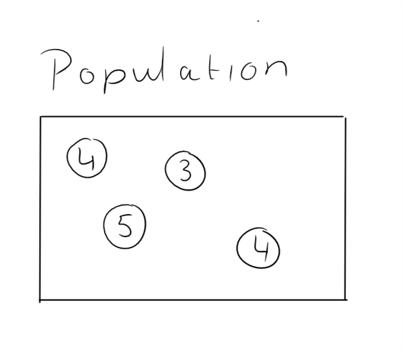
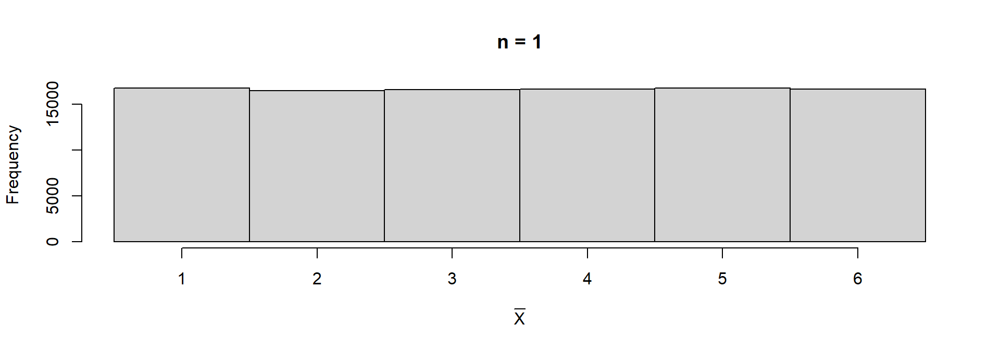
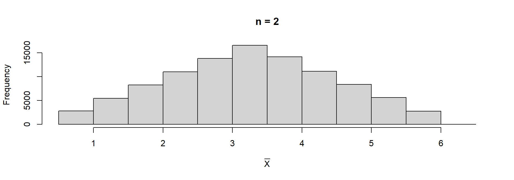
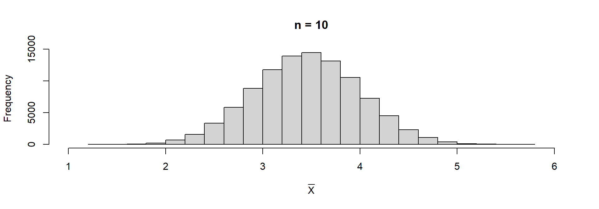
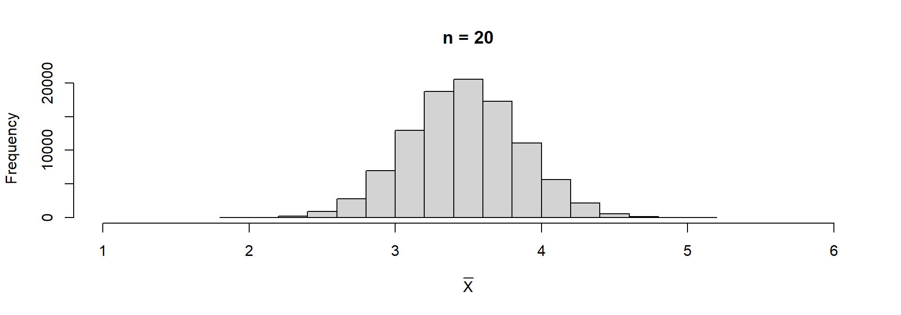
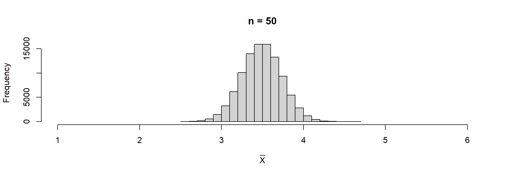
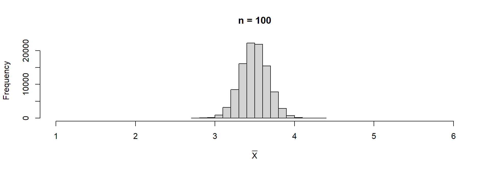
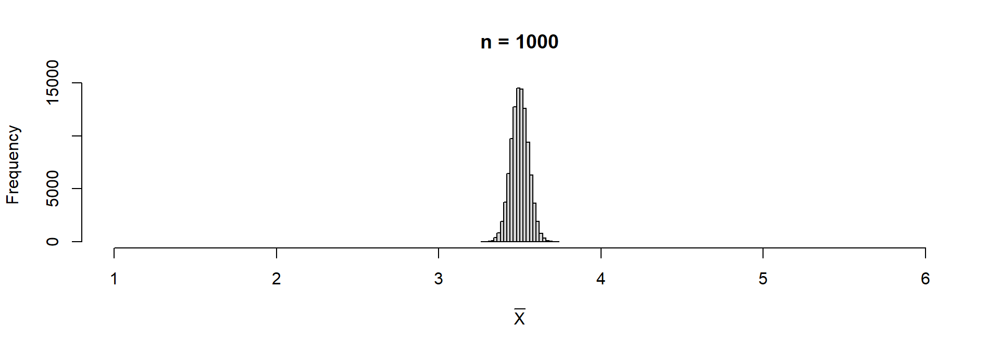

[1] 1Sampling
ECON 2B03, Winter 2026
Part B | Lecture 8
Chris Muris, McMaster University
Agenda
Previously: Part A summary
- Foundations:
- descriptive vs inferential statistics
- populations vs samples; parameters vs statistics
- Data and variables: measurement, types, and study design
- Descriptive statistics:
- tables and graphs
- summary measures (mean, sd, median, quartiles, IQR, z-scores)
- Tools: using R/Quarto to compute, visualize, and report
Previously: Part B so far
- Random experiments, sample spaces, and events
- Probability rules; counting techniques
- Conditional, joint, and marginal probabilities; multiplication rule and independence
- Discrete and continuous random variables; binomial and normal distributions
- Normal probabilities, standardization, and tail cutoffs
This lecture
- Random sampling and simple random samples
- Why sample statistics are random variables
- The mean and standard deviation of \(\bar X\)
Readings and homework
- Readings: SZ 6.1
- Homework: SZ 6.1: 1, 3
Overview
- Why this matters: understanding that sample statistics are random variables is the conceptual bridge between probability theory and statistical inference.
- What you will learn:
- why random sampling produces random sample statistics
- the mean and standard deviation of the sample mean
- how variability of \(\bar X\) decreases with sample size
Part I: Sampling
Why sampling?
- We want to know things about populations: average income, unemployment rate, voter preferences
- It is usually impractical to measure every individual in the population
- Instead, we draw a sample and use it to learn about the population
- But different samples give different answers
- This lecture: understanding why sample statistics vary and how much they vary

Estimating the average value of a car (SZ 1)
- There are millions of passenger automobiles in the US; what is their average value?
- It is impractical to assess every single car, so a researcher draws a random sample of 200 and finds an average of $8,357
- If someone else drew another sample of 200, would they get $8,357?
- almost surely not
- the sample mean varies from sample to sample
- In the remainder of 2B03, we assume data are generated via simple random sampling:
- \(n\) objects are selected at random from a very large population
- each item in the population has the same probability of being chosen
- resulting sample data are a random sample from the population of interest
- Draw a random sample and compute the median
Rgives you some number, say 3.7
- Draw another sample and compute the median
- you will get a different result
- Draw a third sample and compute the median
- you will get a different number again
- Statistics from different samples drawn from the same population are different from each other
SAMPLE STATISTICS ARE RANDOM VARIABLES
Poll-to-poll variability
- A polling firm wants to estimate the fraction of voters who support a policy
- They draw a random sample of \(n=50\) voters and find 56% support
- They draw another sample of \(n=50\) and find 52% support
- A third sample gives 61% support
- Each sample gives a different estimate because the sample is random
- The sample proportion \(\hat{p}\) is a random variable, just like the sample mean \(\bar{X}\)
A tiny population

- What is the mean in this population, \(\mu_X\)?
- What is the variance in this population, \(\sigma^2_X\)?
- What is the standard deviation in this population?
- In this population, what is \(P(X=4)\)?
A tiny population (continued)
- Randomly select one element from the population and call it \(X_1\)
- what is \(P(X_1 = 4)\)?
- what is \(E(X_1)\)?
- what is the standard deviation of \(X_1\)?
- is \(X_1\) a random variable?
A tiny population (continued)
- Put \(X_1\) back and draw another element, call it \(X_2\)
- what is \(P(X_2 = 4)\)?
- what is \(E(X_2)\)?
- what is the standard deviation of \(X_2\)?
- is \(X_2\) a random variable?
- are \(X_1\) and \(X_2\) independent?
Exercise: Random or not?
A population of 10,000 households has mean income \(\mu = 65{,}000\) and standard deviation \(\sigma = 12{,}000\). A researcher draws a simple random sample of \(n = 50\) households.
- Which of these are random variables: \(\mu\), \(\sigma\), \(\bar X\), \(n\)?
- \(\mu = 65{,}000\) is a fixed population parameter, not random
- \(\sigma = 12{,}000\) is a fixed population parameter, not random
- \(\bar X\) is a random variable: it would change if a different sample were drawn
- \(n = 50\) is a fixed design choice, not random
Part II: Sample Mean
Sample mean \(\bar X\)
- The sample mean for the \(n\) observations \(X_1, \dots, X_n\) is
\[\bar{X} = \frac{1}{n} (X_1 + X_2 + \cdots + X_n)\]
- Sample mean for a sample size of two:
\[\bar X = \frac{X_1 + X_2}{2}\]
Is \(\bar X\) a random variable?
- Consider a thought experiment:
- Shake, then pick an element at random and record \(X_1\)
- Put it back, shake again, and record \(X_2\)
- Compute the sample mean \((X_1+X_2)/2\)
- If you repeat steps 1 through 3, will you get the same answer?
THE SAMPLE MEAN IS A RANDOM VARIABLE
Student GPAs in 2B03
- Variable of interest: current GPA
- Population: all 2B03 students (\(\mu_X = 3.3\), \(\sigma_X = 0.4\))
- Sample: randomly select 1 of you, record GPA (\(=X_1\))
- Questions:
- what is \(E(X_1)\)?
- what is the standard deviation of \(X_1\)?
- Randomly select another student and record GPA (\(=X_2\))
- what is \(E(X_2)\)?
- what is the standard deviation of \(X_2\)?
- is \(X_2\) a random variable?
- are \(X_1\) and \(X_2\) independent?
Student GPAs in 2B03 (continued)
The sample mean for two randomly selected students is \(\bar{X} = \frac{1}{2} (X_1 + X_2)\).
- Is it a random variable?
- What is \(E(\bar{X})\)?
- What is the standard deviation of \(\bar X\)?
- Larger or smaller than sd of \(X_1\)?
- What is the distribution of \(\bar X\)?
Exercise: Sample mean of two dice
You roll a fair die twice and compute the sample mean \(\bar X = (X_1 + X_2)/2\). Recall: for a single die roll, \(\mu = 3.5\) and \(\sigma^2 = 35/12\).
- What is \(E(\bar X)\)?
- Is \(\text{sd}(\bar X)\) larger or smaller than \(\text{sd}(X_1)\)?
- \(E(\bar X) = \mu = 3.5\) (the sample mean centers at the population mean)
- \(\text{sd}(\bar X) = \sigma / \sqrt{2} = \sqrt{35/12}/\sqrt{2} \approx 1.21\), which is smaller than \(\text{sd}(X_1) = \sqrt{35/12} \approx 1.71\)
- Averaging reduces variability
Part III: Demonstration in R
Rolling dice
- Roll a die once
- Roll a die
ntimes, then take the mean
- Histogram of 10,000 sample means with \(n=1\)

- Why do we expect bars with equal height?
- Why don’t we see exactly equal heights?
- What is \(E(\bar X)\)?
- What is the standard deviation of \(\bar X\)?
- Histogram of 10,000 sample means with \(n=2\)

- Is \(E(\bar X)\) smaller, equal, or greater than when \(n=1\)?
- Is sd smaller, equal, or greater than when \(n=1\)?
- For \(n=10\)…

- For \(n=20\)…

- For \(n=50\)…

- For \(n=100\)…

- For \(n=1{,}000\)…

- The histogram is always centered at 3.5 (the population mean \(\mu\))
- The histogram becomes more concentrated around 3.5 (less spread)
- The shape becomes more symmetric, more bell-shaped
- Can we make these observations precise?
- what is the center of the distribution of \(\bar X\)?
- how much does \(\bar X\) vary?
- Part IV answers both questions with formulas
Part IV: Mean and SD of the Sample Mean
Why we need formulas
- The R demonstration showed us two patterns visually:
- the sample mean centers at the population mean
- the spread of \(\bar X\) shrinks as \(n\) grows
- But in practice we cannot simulate 10,000 samples; we usually have just one sample
- We need formulas that tell us what to expect from \(\bar X\) before we collect data
- These formulas are the key to all of Part C (statistical inference)
The sample mean has a distribution
- The sample mean is a random variable
- So it has a distribution
- Therefore it has a mean and standard deviation
- The mean of the sample mean, \(\mu_{\bar X} = E(\bar X)\), is the value around which sample means from repeated samples of the same size would center
- The standard deviation of the sample mean, \(\sigma_{\bar X}\), measures how much sample means from repeated samples of the same size would vary
Mean of the sample mean
- For a random sample of size \(n\) from a population with mean \(\mu\) and standard deviation \(\sigma\): \[\mu_{\bar X} = \mu\]
- The sample mean is unbiased: on average, it equals the population mean
- No matter how large or small \(n\) is, the center of the distribution of \(\bar X\) is always \(\mu\)
Standard deviation of the sample mean
- For a random sample of size \(n\) from a population with mean \(\mu\) and standard deviation \(\sigma\): \[\sigma_{\bar X} = \frac{\sigma}{\sqrt{n}}\]
- Averages vary less than individual measurements
- The variability shrinks by a factor of \(\sqrt{n}\)
What the formulas tell you
- \(\mu_{\bar X} = \mu\): if we could take every possible sample, the sample means would center at \(\mu\)
- \(\sigma_{\bar X} = \frac{\sigma}{\sqrt{n}}\): the spread depends on two things:
- \(\sigma\): more variable populations produce more variable sample means
- \(n\): larger samples produce more precise estimates
- to halve the standard deviation of \(\bar X\), you need to quadruple the sample size (because \(\sqrt{4} = 2\))
Average household income in a city
- A city has mean household income \(\mu = 72{,}000\) with \(\sigma = 18{,}000\)
- A researcher draws a random sample of \(n = 36\) households and computes \(\bar{X}\)
- The mean of \(\bar{X}\): \(\mu_{\bar X} = 72{,}000\)
- The standard deviation of \(\bar{X}\): \(\sigma_{\bar X} = \frac{18{,}000}{\sqrt{36}} = 3{,}000\)
- Individual incomes vary by $18,000 around the mean, but the sample mean of 36 households varies by only $3,000
Average household income (continued)
- What if the researcher used \(n = 144\) instead?
- \(\sigma_{\bar X} = \frac{18{,}000}{\sqrt{144}} = 1{,}500\)
- Quadrupling the sample size (from 36 to 144) halved the standard deviation (from 3,000 to 1,500)
Exercises
Exercise: Rowing team sample means
A rowing team has weights 152, 156, 160, and 164 pounds. Consider all samples of size two with replacement.
- Compute the sample mean for each possible sample
- Use them to find the mean and standard deviation of the sample mean
- There are \(4 \times 4 = 16\) equally likely samples. The sampling distribution of \(\bar X\):
| \(\bar x\) | 152 | 154 | 156 | 158 | 160 | 162 | 164 |
|---|---|---|---|---|---|---|---|
| \(P(\bar X = \bar x)\) | 1/16 | 2/16 | 3/16 | 4/16 | 3/16 | 2/16 | 1/16 |
- Mean: \(\mu_{\bar X} = 158 = \mu\)
- Population sd: \(\sigma = \sqrt{20} \approx 4.472\)
- Standard deviation: \(\sigma_{\bar X} = \sigma/\sqrt{2} \approx 3.162\)
Exercise: Tax values and sample means
Vehicle tax values are normal with mean \(13{,}525\) and standard deviation \(4{,}180\). A random sample of size \(n=100\) is taken.
- Find \(\mu_{\bar X}\) and \(\sigma_{\bar X}\)
- \(\mu_{\bar X} = 13{,}525\)
- \(\sigma_{\bar X} = \frac{4{,}180}{\sqrt{100}} = 418\)
Exercise: Effect of sample size on precision
A population has mean \(\mu = 75\) and standard deviation \(\sigma = 12\).
- Find \(\mu_{\bar X}\) and \(\sigma_{\bar X}\) when the sample size is \(n = 121\)
- How do the answers change if the sample size increases to \(n = 400\)?
- For \(n = 121\): \(\mu_{\bar X} = 75\) and \(\sigma_{\bar X} = \frac{12}{\sqrt{121}} = \frac{12}{11} \approx 1.09\)
- For \(n = 400\): \(\mu_{\bar X} = 75\) (unchanged) and \(\sigma_{\bar X} = \frac{12}{\sqrt{400}} = \frac{12}{20} = 0.60\)
- The mean stays the same regardless of sample size, but the standard deviation decreases as \(n\) grows
Conclusion
These slides started from J. S. Racine’s slides for ECON2B03 at McMaster University.
Readings are from
- SZ: D. Shafer and Z. Zhang (2012), “Introductory Statistics”
- IMS: M. Çetinkaya-Rundel and J. Hardin (2023), “Introduction to Modern Statistics”
References